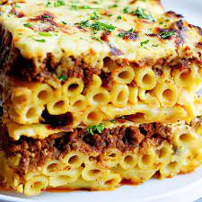

Pastitsio

Description
Pastitsio, sometimes referred to as Greek lasagna, is easy to make with a savory meat sauce, tubular pasta, rich béchamel sauce, and cheese. It tastes incredible — everyone loves this comforting dish!
Ingredients
Pasta
- 1 pound dry penne or ziti pasta
- 4 tablespoons butter
- 1/4 cup grated Kefalotiri or Parmesan cheese
- 1 dahs ground nutmeg
- salt and pepper to waste
- 3 large eggs, lighty beaten
Meat Sauce
- 2 tablespoons butter
- 1 large onion, chopped
- 1 clove garlic, crushed
- 1 1/2 pounds lean ground beef
- 1/2 cup dry red wine
- 1/2 cup vegetable broth
- 1/4 cup tomato paste
- 2 tablespoons chopped fresh parsley
- 1/2 teaspoon cinnamon or 1 cinnamon stick
- 1 whole clove
- salt and pepper to taste